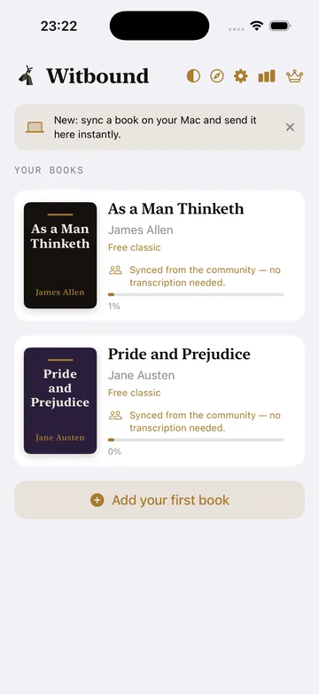
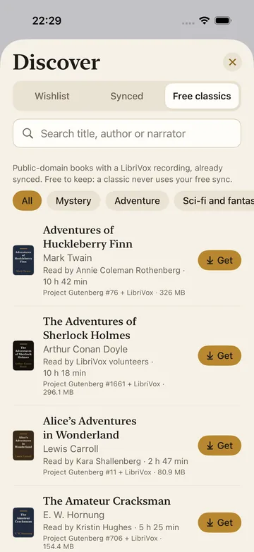
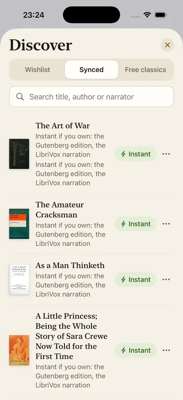
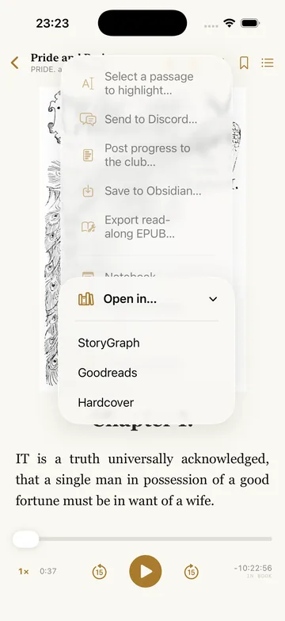
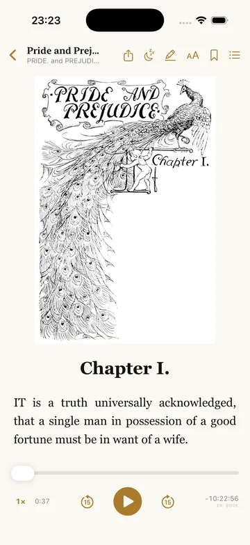

Read-along for books you own
The narrator reads. The words light up.
Your ebook and its audiobook, matched word by word on your iPhone or iPad. No account, and your books never leave the device.
The narrator reads: A slow and heavy step, which had been heard upon the stairs and in the passage, paused immediately outside the door. Then there was a loud and authoritative tap. “Come in!” said Holmes.
Recorded from the app, with the narration it was playing.
A Scandal in Bohemia, read by David Clarke. Recording: LibriVox. Text and illustration: Project Gutenberg. Both are in the public domain.
- $9.99 once
- Free classics
- First book free
For iPhone and iPad on iOS 26 or later, and Android 8 or later.
Rated 4.8 from 6 ratings in the US App Store. Read every review
Bring an ebook and its audiobook. Your phone does the rest.
Two files you already own become one book you can hear and see. The matching happens on your iPhone or iPad, and your books are never uploaded.
Add both halves
An epub (Kobo .kepub works too) or a PDF, and the audiobook as m4b, m4a, mp3, flac, wav or aiff. A folder of parts becomes one book, with a chapter for each part.
Your iPhone matches them, once
It goes through the narration and lines every spoken word up with the page. You can start reading when chapter one is done. The rest finishes in the background, overnight while it charges if you like, and a notification tells you when it’s ready.
Press play
The narrator reads and each word lights up on the book’s own pages. Tap any word and the audio jumps there. Your place is kept to the word.
One catch. Audible and Kindle-store books won’t open. They’re copy-protected, and Witbound won’t break that. DRM-free books work: Libro.fm, Downpour, LibriVox, Standard Ebooks and Project Gutenberg. New to this? Start with the free public-domain pairs.

Readers wrote in. The app changed.
Some of what’s in Witbound began as a review or a Reddit post. Here are five, with the version that answered each one. After them, every written App Store review so far, word for word.
“Will buy and recommend to friends if you add download from my computer via 192.168.1.blah.”
Please for the love of dilbert · App Store review, United States · 12 August
Answered in Mac 1.0 and iOS 1.5.3, on 23 AugustWitbound for Mac: sync the book on your computer, then send it to your phone over your own Wi-Fi, already synced.
A reader on Reddit wanted finer speed control:
exactly 1.1× or 1.15×
Reddit
Answered in 1.5.2, on 22 AugustSpeed in steps of 0.05, anywhere from 0.5× to 2×.
A reader wanted the ebook from Calibre and the audiobook from Audiobookshelf, without copying files between them.
r/Witbound
Answered in 1.6.0, on 30 AugustPair an Audiobookshelf audiobook with an ebook from your own Calibre or OPDS catalogue. It shipped the same day.
“currently can only highlight entire paragraph, not able to highlight a specific section or sentence”
Mitochon · App Store review, Australia · 4 September
Answered in 1.8.3, on 9 SeptemberSelect a passage: tap a sentence, or drag across exactly the words you want.
“Mac to iPhone app syncing - still can’t get it to work”
Mitochon · the same review
Answered in 1.8.3, on 9 SeptemberReceive from your Mac now checks that your iPhone can be reached before it says Ready, and tells you exactly what to fix if it can’t.
App Store reviews, as written
Ratings on 1 October 2026: 4.8 from 6 ratings in the US store, 5.0 from 1 in the UK.
A perfect app for WhisperSync fans
What a great app! I hope it will continue to improve and hold its greatness. Great work!
Fantastic
Works as advertised. Dev is updating plenty. Excited for more customization in the future.
Absolutely best app for reading
It truly word like magick. Just drop epub and audio book in and it synced. Super convenient
Excellent app
Excellent app. Exactly what I was looking for. Thank you.
Fantastic app with great potential to get even better! I use it every day now.
Thank you to the developer for a generous free copy of the app
I really like Witbound. It just works. Looks beautiful, clean and simple interface.
I’m a hobbyist writer, learning my craft, and reading is one of the best ways for me to level up. So the being able to link audiobooks with ebooks, syncing them so I can listen, then highlight a particularly good passage is amazing.
Witbound does everything it says it will do on the tin, and for that, it’s wonderful.
There are improvements I’d love to see:
- More robust highlighting (currently can only highlight entire paragraph, not able to highlight a specific section or sentence)
- Mac to iPhone app syncing - still can't get it to work but able to do on device on iPhone so not such a huge issue.Developer is very responsive to feedback. He's already fixed a few issues I've found and implemented continuous scrolling.
Looking forward to seeing the app get even better!
Amazing app!
Decent price for an app that does a great job at what it’s supposed to do.
Mck
Will buy and recommend to friends if you add download from my computer via 192.168.1.blah. I listen to audiobooks every day and would like to read along for history books and proper names, dates etc. much easier to dl from computer.
Actually useful app
Lovely so far
Every word lights up as it’s spoken.
The highlight follows the voice a word at a time, on the publisher’s own pages: italics, small caps, illustrations and maps all where they belong. Tap a word to send the narrator there.


Ways to follow along
- Highlight
- A word, a phrase, a sentence or the whole paragraph.
- Colour
- Indigo, warm gold, teal or rose.
- Reading window
- Dims everything except the lines being read.
- Lead the narrator
- Lights the next word a beat early, for readers who like to be ahead.
- Bold word-starts
- The start of each word in bold, to give the eye an anchor.
- Scroll or pages
- One continuous scroll, or turn page by page.
- Silent reading
- Pause and keep reading with your eyes. Press play and the narrator starts where you are.
- Tap and hold
- A word’s meaning or a translation, without moving the audio.
All of these are off until you turn them on.
For listening
The parts you notice at the end of a long day.
- Sleep timer
- Any length from 1 to 180 minutes, or the end of the chapter. Add 15 minutes from the countdown. It only counts while the book is playing.
- Out of the way
- The controls fade while you listen. Tap the page to bring them back.
- Picking up again
- Play starts a few seconds before where you stopped, and further back after a long break.
- Lock screen
- Controls with cover art on the lock screen and in Control Centre, and a chapter list with start times.
Set the page the way you read.
Since version 1.8.5 you choose the font, the size, how wide the text runs and how much room sits between the lines. Then mark it up: bookmarks, highlights and notes stay with the book.

Four fonts
- Georgia
- New York
- San Francisco
- Atkinson Hyperlegible
Atkinson Hyperlegible was drawn for readers with low vision. Text goes up to 40 points.
Three widths
On iPad, Full lets the text fill the screen. Line and paragraph spacing are yours to set as well.
Three papers
Night is for the last chapter in bed, with the screen turned down.
Bookmarks
Bookmark a page from the top bar. Contents lists them, and one tap brings back the page and the narration together.
Highlights and notes
Press and hold, then choose Highlight or Add Note. Highlights show on the page, and tapping one opens its note.
Select a passage
Tap a sentence, or drag across exactly the words you want to keep.
Take it with you
Export highlights and notes as text, save passages to Obsidian as linked notes, or share a quote to your Discord book club with the narrator’s own reading attached.

Your books, from wherever they already live.
Plain files work, and so do the servers you already run. Nothing is copied anywhere you didn’t choose.
- Files
- An ebook and its audio from the Files app, iCloud Drive or AirDrop.
- Audiobookshelf
- Connect at home, over Tailscale or with an API key. Browse, search and sort with covers and narrators, whole libraries included. Your place syncs both ways, so any Audiobookshelf app picks up where you stopped.
- Calibre and OPDS
- Pair an audiobook with the ebook from your own catalogue, found by title and author. Grimmory and BookOrbit are tested, and Grimmory can be searched and browsed by author, series or shelf.
- Plex
- Sign in or type your server’s address, then import audiobooks from your music library.
- Your Mac
- Witbound for Mac sends books over your own Wi-Fi, already synced.
- Audio only
- No ebook? Witbound offers to find it in your library first. If there isn’t one, it writes the book from the narration, chapter by chapter.
Copy-protected files are turned away by name: Audible .aax, Kindle-store books and DRM’d epubs. Kindle-format files on a server get a one-line explanation and the offer to write the book from the audio instead.

Free classics, a to-read list, and what’s ready to sync.
Discover, the compass at the top of your shelf, is new in version 1.8.6. Every book in it shows its real cover.


- Free classics
- Twenty public-domain books with their LibriVox recordings, already synced. Tap Get and read along. They never use up your free book.
- Synced
- Editions and narrations that sync almost instantly. Witbound doesn’t provide books: get your own copies of this edition and narration, and syncing is almost instant.
- To read
- Add the books you plan to read and see when other readers have synced them. Your to-read list stays on your device unless you choose to share it.
Also new in 1.8.6
A notebook for every book
Your highlights, bookmarks and notes in one place. Search it, filter it, tap an entry to jump to that page and that moment in the audio, and export it as text or Markdown.
Pictures, full screen
Tap an illustration to see it full screen and zoom in.
Open in StoryGraph, Goodreads or Hardcover
From the book’s menu, or copy your progress to paste there.
Export a read-along EPUB
Any synced EPUB book, with the audio and timing inside, for other read-along apps.
More page, less chrome
The page counter under the text is gone, so the words run down to the player.


What leaves your phone, and what never does.
There’s no account, no ads and no analytics of Witbound’s own. One feature goes online by default, community sync, and it shares timings, not books.
Stays on your device
Goes online, and when
Your book and its audioNever leave the device.
A timing mapWord positions and times. No text, no audio.
The next reader with the same editionTheir copy is ready in seconds.
If someone has already synced your edition, your copy is ready in seconds. Since version 1.8.2 Witbound also recognises the same book when the files aren’t identical: a friend’s copy, a different epub edition, or audio that was re-encoded.
On the App Store, Witbound’s privacy label reads Data Not Linked to You
, for User Content, Search History, Identifiers and Other Data. That’s community sync’s timing maps and, from Discover, the books you choose to share, what you search for and a random ID made by the app, which doesn’t say who you are. The privacy policy says exactly what is sent, and where.
Follow along in the language of the book.
Witbound works out the language from the book itself. These sync today:
- English
- Français
- Español
- Deutsch
- Italiano
- Português
- 日本語
- 한국어
- 中文
- Polski, and more
Since version 1.8.0, Polish and other languages can sync too, using Apple’s dictation. With those, the highlight can land a beat off more often.
How sure am I? English is measured across 32 books. Of the languages added in 1.8.0 I’ve measured one, Polish, on one book. If you read in another language, try it with your free book and tell me how it went.
One book, on the screens you read on.
Witbound is for iPhone and iPad, with a free companion for the Mac that does the slow part, and an app for Android on Google Play.
iPad
The same app, with room to spread out. Let the text fill the screen, or keep a comfortable column with wide margins.

Witbound for Mac
Drop in an ebook and its audiobook, as files or folders. Your Mac syncs it in minutes, not hours, then sends it to your iPhone or iPad over your own Wi-Fi, already synced.
It browses Audiobookshelf, Calibre, Grimmory, BookOrbit and Plex, and converts DRM-free Kindle files through calibre if you have it. Signed and notarised by Apple, for Apple silicon and Intel.
Android
Witbound for Android runs on Android 8 or later and is on Google Play. Bring an epub and its audiobook (m4b, m4a or mp3) from your files or Google Drive, or from Audiobookshelf, Calibre and OPDS, or Plex. Your phone does the matching, and the words light up as they’re spoken.
Pick from four fonts, set the text from 12 to 40, and adjust line and paragraph spacing, or read in one continuous scroll that follows the narrator. Every book has a notebook for your highlights, notes and bookmarks, and Return to narration takes you back to the spoken word. Syncing shows about how long is left, and if Android pauses a long sync, one tap carries on.
Your first book is free. Witbound Plus is a one-time purchase on Google Play, separate from the App Store. PDFs and Receive from your Mac are on iPhone and iPad.
$9.99, once. Your first book is free.
No subscription, and nothing that renews. Your first book syncs free, start to finish, before you pay anything. After that, one payment covers every book.
Free
$0to download
Everything, for your first book.
Witbound Plus
$9.99once
One payment, kept for good.
Elsewhere it’s £9.99, €9.99, C$12.99 or A$14.99, set by the App Store for your country.
The questions people ask first.
Will my Audible or Kindle books work?
No, and they never will. They’re copy-protected, and Witbound won’t break that. DRM-free books work: Libro.fm, Downpour, LibriVox, Standard Ebooks and Project Gutenberg. New to this? Start with the free pairs.
What do I need?
An iPhone or iPad on iOS 26 or later, an ebook (epub or PDF) and its audiobook (m4b, m4a, mp3, flac, wav or aiff). Or connect Audiobookshelf, Calibre or another OPDS catalogue, or Plex. On Android 8 or later: an epub and its audiobook as m4b, m4a or mp3, from your files, Google Drive or the same servers.
How long does the first sync take?
You can start reading once chapter one is done, and the rest finishes in the background, overnight if you like. Popular editions are ready in seconds through community sync. The free Mac app syncs a long book in minutes.
What if my ebook and audiobook are different editions?
Witbound matches what it can and leaves the rest as ordinary text. It won’t force a bad match.
Do I need the internet?
Not to read or listen. Witbound goes online for community sync, which you can switch off, for Discover when you use it, for servers you connect, and for purchases.
Can I reach my Audiobookshelf server away from home?
Yes. Use Tailscale or any address you can reach, with an API key if you like. Self-signed certificates work: Witbound asks you to trust the server the first time.
Which languages?
English, French, Spanish, German, Italian, Portuguese, Japanese, Korean and Chinese, worked out from the book. Polish and more through Apple’s dictation, where the highlight can land a beat off more often.
What does it cost?
$9.99 once for every book. Your first book is free, and the Mac app is free.
Is there a Mac or Android version?
Mac: yes, free, for macOS 26 or later. Witbound for Mac syncs on the computer and sends the book to your iPhone or iPad. Android: yes, it runs on Android 8 or later and is on Google Play.
Where are my books stored?
On your device. They’re never uploaded, apart from a short passage you choose to share. The privacy policy has the details.
A note from Moe.
I read the same books twice: ears on the commute, eyes at night. Every switch meant scanning pages for my place. Witbound is the app I wanted for that, and it’s just me making it, in the UK.
My longest test was a 37 hour audiobook, and the highlight stayed on the word. I won’t break DRM. There’s no account because I don’t need to know who you are or what you read.
Since August there have been 24 iPhone releases and 9 for the Mac, and several began as a message from a reader. If something doesn’t work with your books, email me. I read every message and I reply myself.
Moe
zarksided@gmail.comr/Witboundu/zarksideWitbound for Mac on GitHub